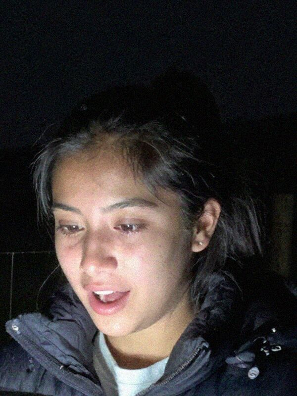
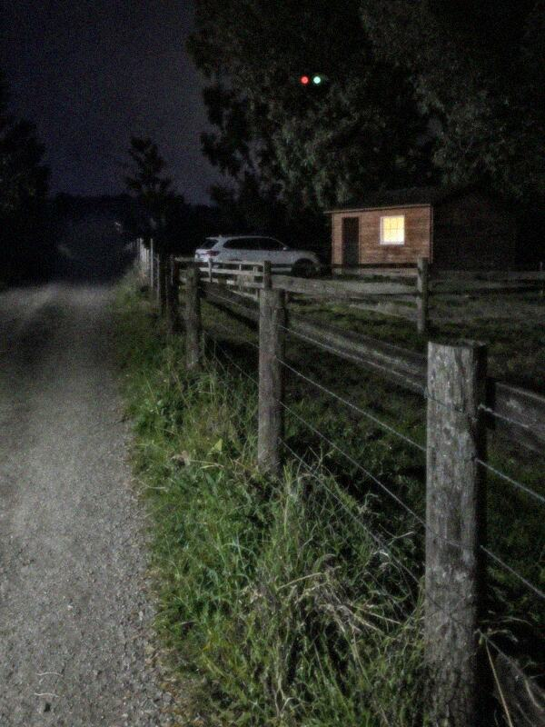
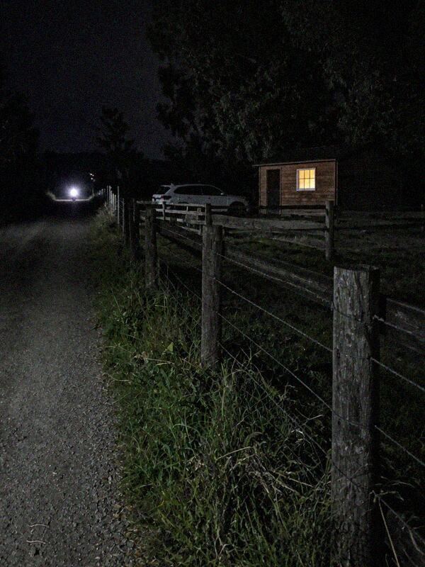
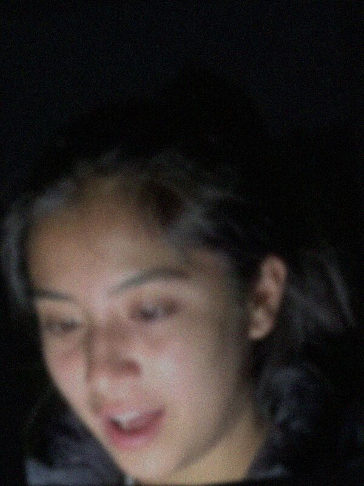
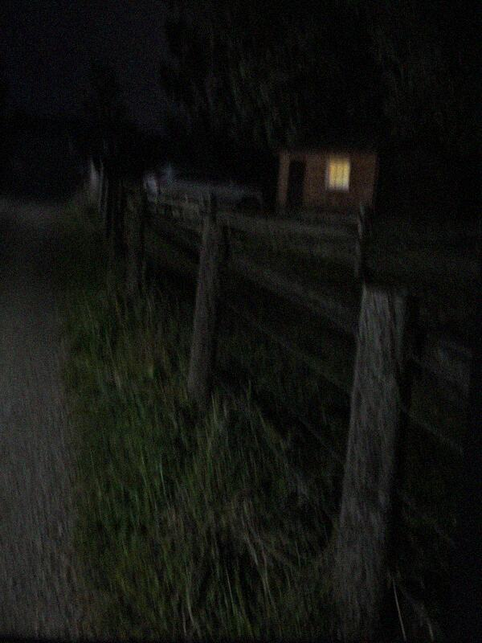
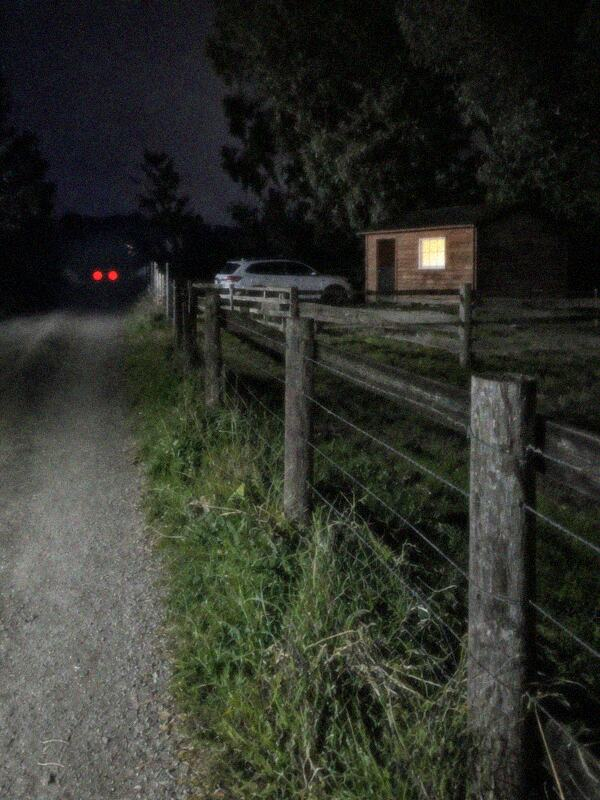
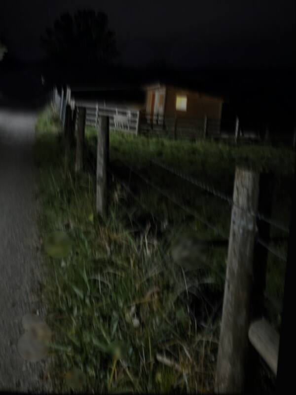

Evidencia digital · aportada por J. PeñaLive TikTok "EN VIVO: cazando al chupacabras" · viernes 30-10, 22:30 a 00:30
E08Capturas del live
Javiera graba desde el cerco de Don Hernán, mirando hacia El Arrayán. En el cuadro se ven el corral, la luz de la caseta y el camino.

EN VIVO22:31"¡Hola, cazadores! Estamos en Labranza, al lado de El Arrayán, donde anoche mataron una oveja."
vale.ar que miedo1,2 mil espectadores

EN VIVO22:48"¿Qué es eso? ¡Hay luces en el cielo!"
nico_tmc OVNIIIIIfeñaa son luces de avión

EN VIVO23:10"Viene algo por el camino… con una sola luz. ¿Una moto? ¿Quién viene a esta hora?"
pancho.lab es una motodani_lb el toto jajaja

EN VIVO23:15"¡¿Escucharon eso?! Un grito… ¡Es el chupacabras!"
seba.rt ANDATE DE AHÍ2,8 mil espectadores

EN VIVO23:20"No me voy a acercar. Los perros están como locos."
rocio.t llama a los pacos!!

EN VIVO23:24"Se va… se va para Labranza."
tomas.c ¿y eso qué era?seba.rt sigue grabando!!

EN VIVO23:31"¡Empezó a llover! Tapo el celu…"
vale.ar anda a tu casa javi
El live sigue hasta las 00:30, con Javiera en el cerco.
Transcripción del perito informático
- 23:10:12 · Entra por el camino una fuente de luz blanca única, a unos 80 cm del suelo, en dirección a El Arrayán.
- 23:12:40 · Se oye un golpe seco compatible con una puerta. Ladran perros.
- 23:15:05 · Grito breve, a distancia. No es posible identificar si es humano o animal.
- 23:24:31 · Dos luces rojas, separadas por aproximadamente 1,5 m y a la misma altura, se alejan por el camino hacia el oriente.
- 23:28:50 · Comienzan a escucharse gotas sobre el micrófono.
- Entre 22:30 y 00:30 la cámara no se mueve del cerco y la voz de Javiera se escucha sin cortes de más de 40 segundos.
 Open CaseEl Chupacabras de Labranza
Open CaseEl Chupacabras de Labranza